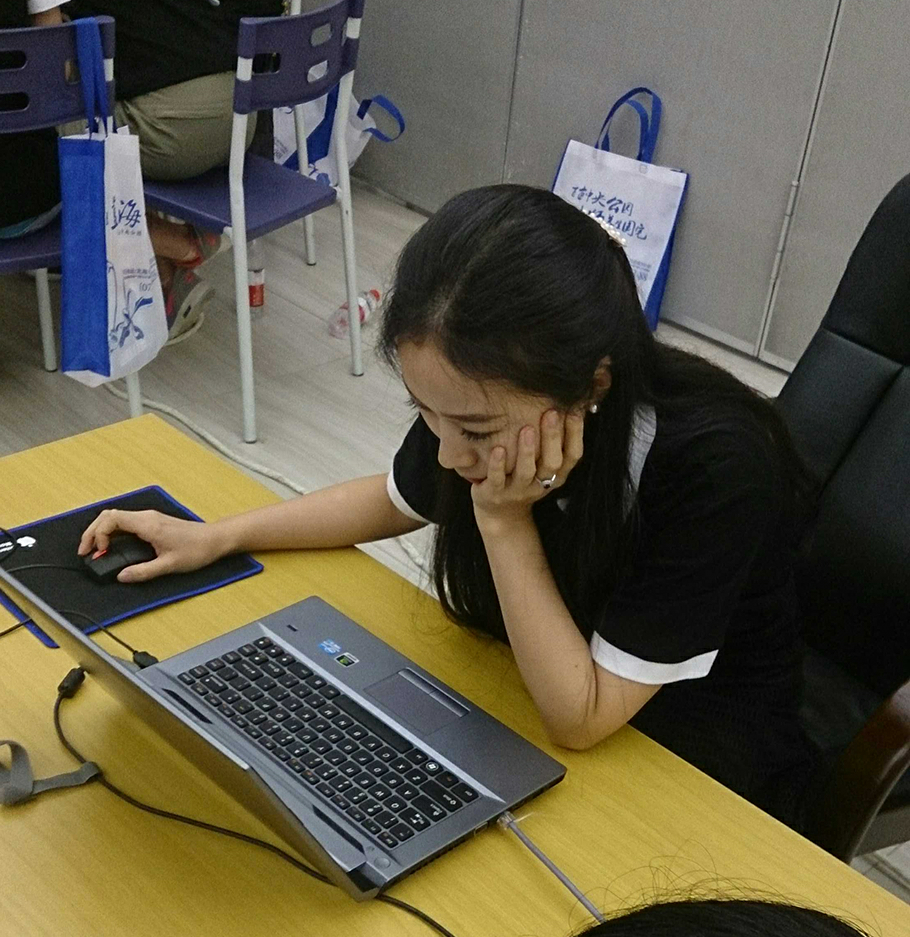

名字:
Vincent W
性别:男
介绍:Man with stories…
问题
答案
新建于:2015-12-04 07:11:48 PM，更新于2015-12-04 07:11:48 PM
Pre上一页
Next下一页
跳页:
正文: 身为广州围棋界的一员，可以很负责任地告诉你，你知道的都是错的。女的学棋学生阶段起步时的确有优势，人少容易拿奖，可能这会让你产生误会觉得女的容易。其实女的学到一定程度再想进步比男的难多了，更别说打职业，好多都是拿了职业1段就开始干解说了，最多平时打俱乐部赛之类的有女生人数要求的出一下赛。
至于你说的棋迷受欢迎程度，那其实跟其他行业一样，看脸！！！个人感觉目前最受欢迎的就是黒嘉嘉和王香如之类颜好的了，都是职业1段就干别的了，例如解说之类。 附送2张赛场随拍，感觉真人漂亮点…

ps：图1：王香如比赛中 图2：黒嘉嘉
Pre上一页
Next下一页
跳页: